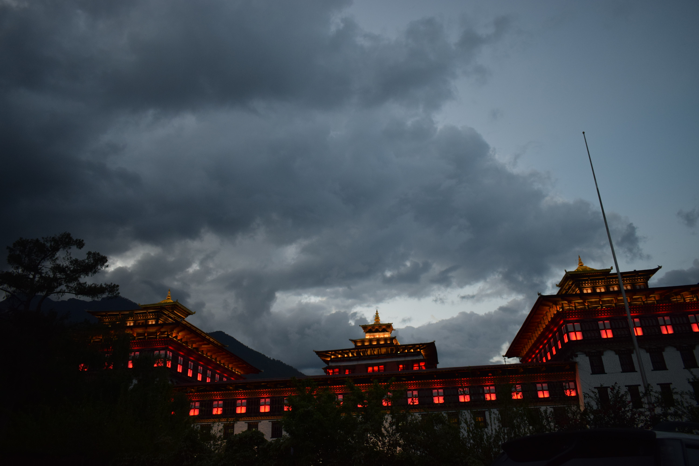
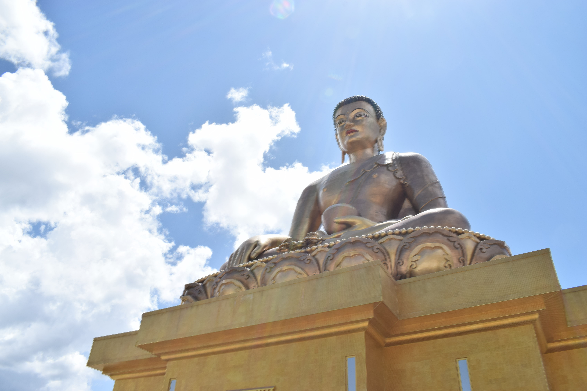
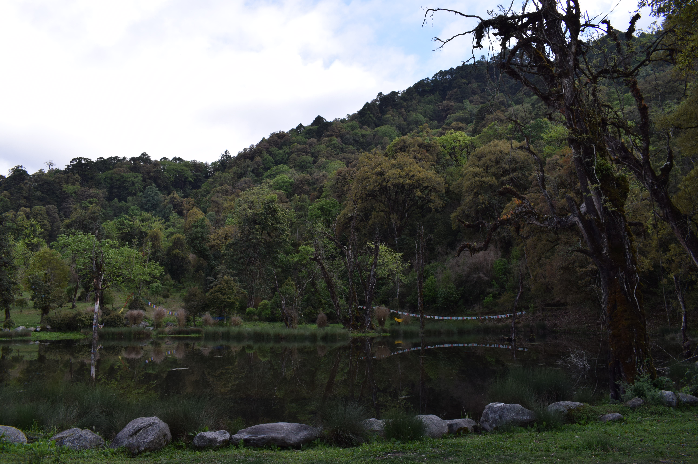
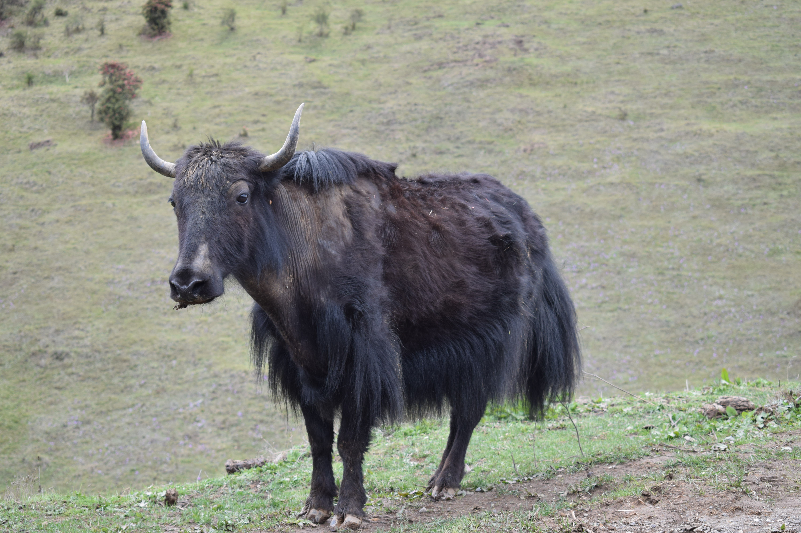
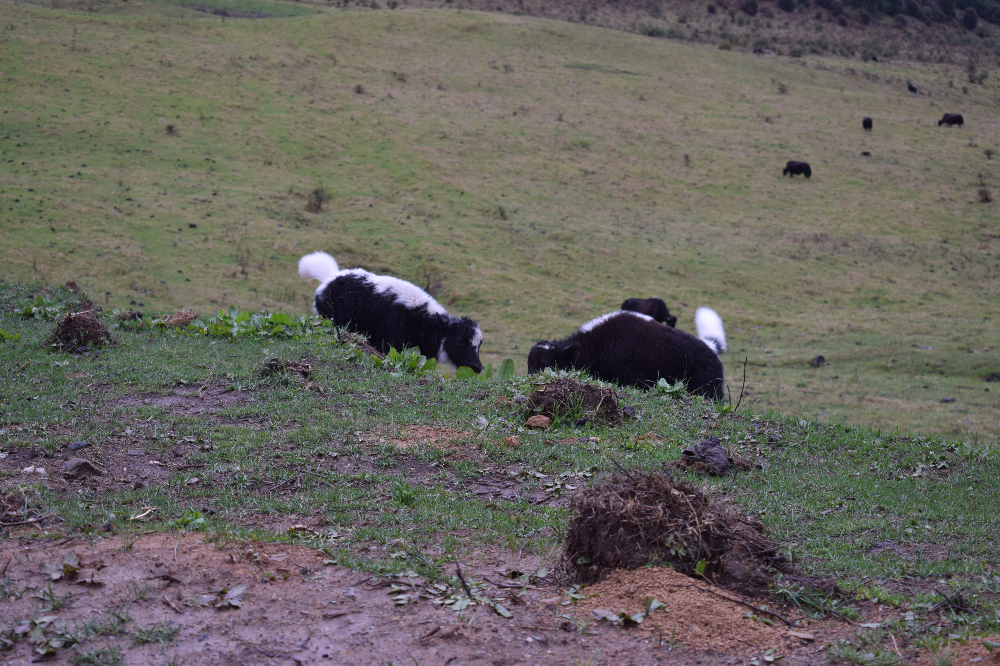

Trip to the happy place - Bhutan
Me and a bunch of friends had the awesome opportunity to visit Bhutan for 6 days in the month of May. The weather was good with min-max temperatures of around 15 - 22 degree Celsius. Being nationals of India, we didn't need a visa to enter bhutan. Filled a simple immigration form at the airport and got the passport stamped. Our itinerary for the trip was as follows
Itinerary
- Day 1 - Thimphu: We started from Delhi by a 6.30 am flight to Paro, Bhutan, via Kathmandu. The flight was about 3.5 hours in duration. The best part of travelling to Paro from delhi is the view of everest from the flight. Everest peak was visible 10 mins past take-off from Kathmandu. Flight captain announced the pleasant sight. We were able to sight the peak clearly as we had seats on the left side of the plane (with respect to the seating position). We reached paro, after a fun hawk style flight landing on the Paro airport. Landing a plane on Paro airport is considered extremely diffcult. From Paro we hired a taxi for Rs. 1200 to our hotel booked in Thimpu. After resting for sometime, we started exploring the tiny city of thimpu at around 5.30 pm. We encountered bhutanese folks in their beautiful traditional dress. Children tied to the back of their working mothers. Very light and disciplined traffic. All in all, a very pleasant city to explore. We got ourselves new sim cards with data plan for Rs 300 a sim (identity proof needed as passport for Indian nationals). We had a light dinner of famous Bhutanese red rice and vegetable datsi (asparagus cooked in cheese, chillis and Bhutanese spices). We enquired at taxi station and took one offer of Rs. 2.5k/day for a five day taxi hire.


- Day 2 - Thimphu: Travel permits was the first thing we got done on the second day. The immigrations office was 5 mins drive from our hotel. We had to submit a tiny form with passport copies and details of districts to visits. The permits were issued in 30 mins (no fees). We visited a number of places in Thimpu. We first visited Textile Museum, which showcases various weaves of Bhutan (Rs 50/person charge). The Museum also had a tiny workshop, where we could see women weaving. A very interesting learning for me :). Next we went to the Buddha point, this is a huge statue of Lord Buddha on top of a hill. Bhuddha point presides over beautiful views of the terrain. This was followed by short visits to nearby zoo (has only one animal, Takin), Nunnery, royal bhutan cultural museum. We visited the Dzong at 5pm, the flag was lowered at 5pm with a Royal salute and a monk performing puja. We were allowed to visit the Dzong and Monastry after all the officials left at 5.30 pm. We spotted the King of Bhutan leaving his office by walk at 5.30 pm :). The Palace was stunning with pictures detailing history. Our guide explained us the relevance and meaning of each painting patiently in the tour of 1 hour. We closed the day with some shopping and meal of tasty Thupka and Bathup.
- Day 3 - On the way to Wangdue: We started for Wangdue at around 10 am. Drive from Thimpu to Wangdue has some interesting spots to visit on the way. We visited Dochula pass and Royal Botanical Park with a beautiful walking trail of about 3 kms. We reached Wangdue by 6.30 pm and rested in the resort thereafter.

- Day 4 - Visit to Phobjikha Valley. We started for phobjikha valley by 12 pm. The valley is one of the largest valley in Bhutan with many stories weaved around it. The path to the valley passes through very high mountains, with great views. The best view is the end of this mountainous region and start of the green valley with Yak feeding on the green grass. We visited nearby Gangtey Monastery, but it was closed. The visit to Phobjika valley was beautiful, it started raining and we could see clouds touch earth :). We ate at a resort in the valley and started returning to our resort in Wangdue. The drive to this place was a challenge due to incomplete and muddy roads. We took about 3 hours each way to travel. But, the views were totally worth it.


- Day 5 - Punakha and Jorney to Paro: This was an easy day. We left with packed bags to Paro and visited Dzong and the Iron bridge in Punakha, both with beautiful views. We reached paro by 6.30 pm and rested to rise early for next day's trek.
Day 6 - Paro - Trek to the Tiger's Nest. We started early for the trek at around 6am, due to the weather forcast predicting a rainfall after 3pm. The trek was easy and beautiful. We reached the top in around 1.5 hours. We were again assigned a guide for the monastry, he showed us the four main temples and explained their significance. We climbed down in another 2.5 hours with a lot of pit stops. The taxi stand, at bottom of the trek at this time had street vendors selling souvenirs and jewellery for women. We picked up some items from here. By now we were hungry and rain had started pouring down, we had lunch in the town (lots of momos) and headed to the hotel to rest.
Day 7 - Departure from Bhutan: We left from our hotel at 6am for an 8.30 am flight. (Taxi fare: Rs. 500)
References
A woman's jorney to Bhutan - 13 day itinerary